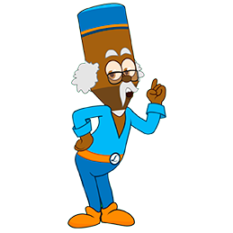
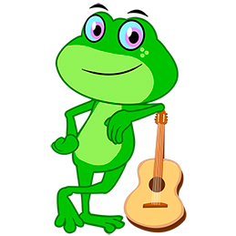
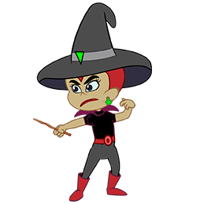

-
Fael
Descrição
Na vida real, Fael é o principal responsável pela existência da Turminha Pimpompem, por isso seu avô fez ele em desenho animado e o levou para a cidade da Turminha Pimpompem, e nesta versão de fantasia e imaginação Fael herdou o amor pelos animais. Por isso ele cuida e protege os animais.
-
Lapisteco
Descrição
É o mestre da Turminha – inteligente, culto e sempre disposto a ensinar. Ele é um lápis ancião muito sábio e mora bem no fundo da floresta. Construiu o Espaço Saber pertinho de sua casa, onde compartilha todo seu conhecimento.
Trapi
Descrição
Essa gatinha é muito bonitinha, meiga, solidária e carinhosa. É ligeira, bem arisca e tem um dom muito especial: ela é uma artista, que adora pintar e faz isso muito bem. A propósito, nada faz Trapi mais feliz que pintar retratos de seus amiguinhos.
Leleco
Descrição
Imagina um poeta que gosta de se comunicar com os amigos fazendo rimas? Pois na Cidade da Turminha Pim Pom Pem mora um artista das palavras: o Leleco, um papagaio especial com um talento que encanta e deixa feliz toda a galera.
Corujilda
Descrição
A Pensa numa pessoa que adooora a natureza e é defensora incansável do meio ambiente. Pensou? Pois eu garanto que a Corujilda é tão ou mais engajada em salvar o nosso planeta. Ah! A corujinha também é muito observadora e – é claro – adora a noite.
Trequinho
Descrição
Além de muito divertido e esperto, o macaquinho é um artesão de mão-cheia. Com uma habilidade manual incrível, Trequinho faz maravilhas, entre elas, muito artesanato e escultura de seus queridos amiguinhos. A Turminha adora!
Trique Trique
Descrição
É impossível passar perto da lagoa e não escutar o sapinho cantando belas e divertidas canções. Apesar da cantoria, ele está sempre alerta. Não é bobo não. Basta passar um mosquito, que o sapinho (vapt!), já o transforma em uma deliciosa refeição.
Morceguildo
Descrição
Ama matemática, é muito curioso e sagaz e sabe como ninguém desvendar enigmas. Além de “cabeçudo”, ele é muito solidário e nunca deixa seus amiguinhos na mão. Ah! outra coisa: ele morre de medo do escuro. Você já viu um morcego que tenha medo de escuro?
Rabuginha
Descrição
Mal-humorada que só, deseja dominar a floresta e subjugar toda a Turminha. Mas dominá-los não será fácil não. Ela é o alvo preferido das Letrinhas Mágicas, que, volta e meia, aprontam brincadeiras que despertam a ira da bruxinha.
Letrinhas Mágicas
Descrição
Brincalhonas, estão sempre interagindo com os amiguinhos. Além disso, elas têm um poder muito, muito especial: dominam a arte da comunicação. Graças às Letrinhas Mágicas, o equilíbrio e a harmonia são sempre mantidos, pois todos se entendem – mesmo sendo de espécies muito diferentes.